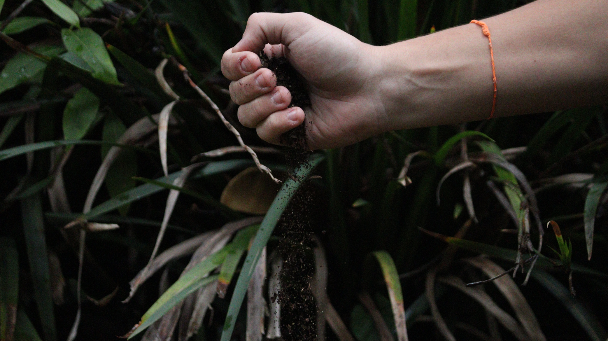

Sobre a Empresa
A Agricolar é uma marca inovadora no agronegócio, que une tecnologia de ponta a práticas agrícolas tradicionais e sustentáveis. Em sua landing page, os visitantes podem explorar vídeos aéreos de drones sobrevoando plantações e assistir a entrevistas com agricultores que adotaram as tecnologias da empresa, compartilhando suas histórias inspiradoras. Além disso, uma sessão de fotografia destaca a frescura e qualidade dos produtos, mostrando todo o ciclo, da fazenda ao consumidor.
Um pequeno agricultor que, com o apoio da Agricolar, transformou sua produção e agora contribui para a alimentação sustentável do mundo. A empresa também incentiva seus colaboradores a criar e compartilhar conteúdos nas redes sociais, promovendo a importância da inovação no agronegócio e a sustentabilidade no campo. Juntos, podemos cultivar um futuro mais verde!
